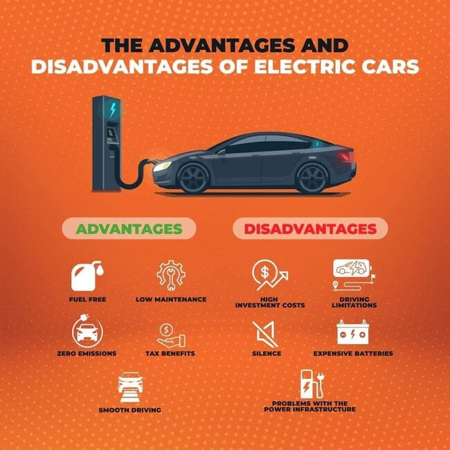

Environmental Impact
Electric vehicles produce zero tailpipe emissions, significantly reducing urban air pollution. Traditional fuel vehicles release CO₂, NOx, and PM2.5 particles, which worsen climate change and health conditions.
Battery Technology: Evolution Over a Century
Battery technology has been at the core of electric vehicle development. Over the past 100 years, it has transformed from simple lead-acid batteries to modern lithium-ion and solid-state cells:
- 1920s–1950s: Lead-acid batteries were bulky, low energy density, short life cycle.
- 1970s: Nickel-Cadmium (NiCd) emerged with better storage but had memory issues.
- 1990s: Nickel-Metal Hydride (NiMH) improved safety and lifespan, used in hybrids.
- 2000s–Present: Lithium-ion became the standard for EVs: lightweight, high energy density, fast charging.
- Future (2030+): Solid-state batteries promise even higher density, faster charging, longer life, and lower fire risk.
Spare Parts & Maintenance
- EVs have fewer moving parts: no engine oil, fewer fluids, minimal brake wear.
- ICE vehicles require frequent oil changes, clutch, gear, and exhaust maintenance.
Affordability & Cost
EVs have higher upfront costs but lower operating expenses. With government subsidies, EVs are becoming more accessible.
Top Manufacturers
India
- Ola Electric
- Ather Energy
- Hero Electric
- Tata Motors
- Mahindra Electric
World
- Tesla
- BYD
- Volkswagen Group
- Hyundai-Kia
- Renault-Nissan
Government Initiatives
- India: FAME II Scheme, state subsidies, GST reduction (12% to 5%).
- Global: Tax credits (USA), CO₂ emission fines (EU), EV mandates (China).
Future Outlook
EVs are set to dominate the auto market by 2030, especially in urban mobility. Fuel vehicles will continue in rural/industrial zones but gradually phase out due to regulation and public awareness.